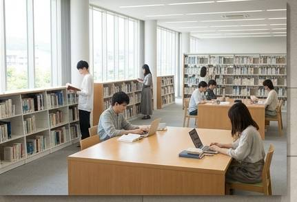

中央図書館
CENTRAL LIBRARY

朕珍大学中央図書館について
朕珍大学中央図書館は、学生・教職員の 学習・研究活動を支援する本学の中心的な 学術情報施設です。
工学・医学・建築・文学をはじめとする 幅広い分野の資料を取り揃え、 学生が自由に学び、考え、交流できる 環境を提供しています。
利用案内
| 開館時間 |
平日 8:30～21:00 土曜日 9:00～17:00 |
|---|---|
| 休館日 | 日曜日・祝日・大学が定める休館日 |
| 利用対象 |
朕珍大学の学生・教職員 その他、大学が認めた利用者 |
| 貸出冊数 | 学生：10冊まで |
| 貸出期間 | 2週間 |
主な施設・設備
一般閲覧室
静かな環境で集中して学習できる 個人向けの閲覧スペースです。
グループ学習室
学生同士のディスカッションや グループワークに利用できます。
電子資料コーナー
電子ジャーナルやオンライン資料を 利用することができます。
研究資料室
専門的な研究資料や貴重書を 閲覧するためのスペースです。
蔵書・資料
本学図書館では、各学部の専門書を中心に、 一般教養書、学術雑誌、新聞、電子資料など、 多様な資料を収集しています。
特に文学・医学・建築・情報工学に関する 資料を重点的に整備しています。
図書館からのお知らせ
館内では他の利用者の迷惑にならないよう、 静かに利用してください。
飲食については指定された場所でのみ お願いします。
なお、図書館内での睡眠は 学習目的とは認められません。